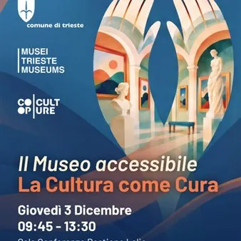

gio 3 dic · dalle 09:45
Il museo accessibile - La cultura come cura
Una mattinata di incontro e approfondimento sul ruolo dei musei come luoghi di benessere, inclusione e partecipazione. In occasione della Giornata internazionale delle persone con disabilità, CoopCulture, in collaborazione con il Comune di Trieste, promuove “Il museo…
 Indicazioni
Indicazioni
- Costi e prenotazioni
- Costo non indicato · Prenotazione non indicata
- Programma
- Programma da verificare. Apri la fonte ufficiale per orari e possibili aggiornamenti.
- In caso di maltempo
- Nessuna indicazione specifica pubblicata.
- Note
- Acquisito automaticamente dalla fonte.
L’EVENTO
Descrizione completa
Una mattinata di incontro e approfondimento sul ruolo dei musei come luoghi di benessere, inclusione e partecipazione.
In occasione della Giornata internazionale delle persone con disabilità, CoopCulture, in collaborazione con il Comune di Trieste, promuove “Il museo accessibile. La cultura come cura”, una mattinata di incontro e approfondimento dedicata al valore del patrimonio culturale come strumento di inclusione, benessere e partecipazione sociale.
L'iniziativa nasce dalla volontà di approfondire il ruolo del museo come spazio aperto a tutti, capace di accogliere persone con esigenze diverse e di favorire nuove forme di relazione, apprendimento e condivisione. Un luogo che, oltre alla sua funzione culturale, può diventare un ambiente di cura, in cui l'esperienza artistica e culturale contribuisce al benessere della persona e della comunità.
Nel corso della mattinata saranno presentati i percorsi dedicati ai pubblici fragili nei Musei Civici di Trieste, con particolare attenzione alle pratiche di accessibilità e inclusione culturale, al valore dell'arte nei processi di relazione e benessere e alle potenzialità della biblioterapia. Attraverso gli interventi di professionisti ed esperti del settore, l'incontro offrirà uno spazio di dialogo e confronto sulle nuove prospettive del museo come luogo di cura e partecipazione.
L'appuntamento rappresenta un'occasione per condividere esperienze, valorizzare le buone pratiche già attive e riflettere su come rendere i luoghi della cultura sempre più accessibili, accoglienti e capaci di rispondere ai bisogni di tutti.
IL PROGRAMMA
9.45 – 10.15 | Caffè di benvenuto
10.15 – 10.30 | Saluti istituzionali
10.30 – 11.00 | Intervento di apertura
11.00 – 12.00 | L'arte che accoglie
12.00 – 13.00 | Pagine di Benessere: itinerari tra arte e biblioterapia
13.00 – 13.30 | Conclusioni e saluti
INFORMAZIONI E PRENOTAZIONI
Sala conferenze del Bastione Lalio, Castello di San Giusto, Trieste
3 dicembre 2026, dalle 9.45 alle 13.30
La partecipazione all'incontro è gratuita, previa prenotazione online attraverso l'apposita pagina dedicata.
IL PROGRAMMA
Programma e orari
Appuntamenti raccolti dalle fonti elencate. Dove manca un orario, non è ancora disponibile in questa scheda.
Programma pubblicato
- 9.45 – 10.15 | Caffè di benvenuto
- 10.15 – 10.30 | Saluti istituzionali
- 10.30 – 11.00 | Intervento di apertura
- 11.00 – 12.00 | L'arte che accoglie
- 12.00 – 13.00 | Pagine di Benessere: itinerari tra arte e biblioterapia
- 13.00 – 13.30 | Conclusioni e saluti
INFORMAZIONI UTILI
Prima di partire
- Controllare la fonte prima di partire.
ORGANIZZAZIONE